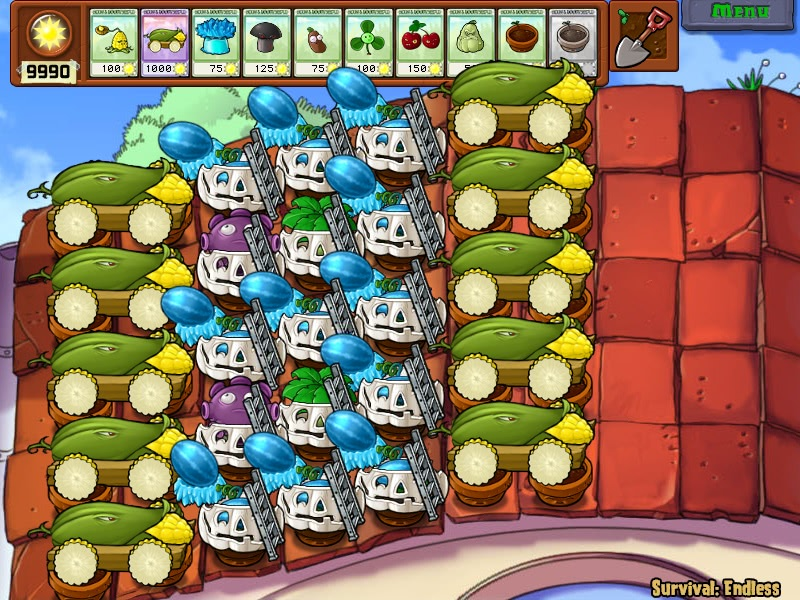

站外导航和链接部分已移动至 /tutorial/
游戏机制和数据部分已移动至 /wiki/
更多资料请查阅 植物大战僵尸吧精品区
以下默认时间单位 cs(厘秒), 空间单位 px(像素), 血量单位 HP.
以下只讨论 PC 原版(1.0.0.1051) 在获得金向日葵, 解锁生存无尽模式, 买齐所有紫卡植物/模仿者/坚果修复术, 买齐 10 格卡槽, 完成阵型布置之后, 不使用修改器完成生存无尽后期阵型运转.
持续存在的植物布置构成阵型, 在游戏设定框架内能够有效处理所有僵尸组合并且保持阵型完整的操作称为阵解. 非极限阵在冲关过程中保证阳光不减或者动态平衡.
阵型布置可借助修改器完成, 无需手动开局. 阵型运转可借助半自动化脚本, 再辅助以手动操作.
阵型和操作密不可分. 目前还不存在(可以预见的未来也不会有)(在战斗界面)无需任何操作实现挂机无尽的阵型.
模仿者变身的植物都是白色, 阵型布置使用白色植物多是出于美观因素. (选卡使用模仿者则是变相减少该卡片的冷却时间.)
植物种在草地花盆上没有实质作用. 无论有没有花盆花盆上植物的判定范围都不会变(只是贴图位置变高). 相比于花盆上面的永久植物消失而被破阵的代价来说, 花盆被多啃几口拖点时间这点好处几乎没有意义.
玉米炮的右判定相比前轮的花盆/睡莲要偏左(10px), 因此可以通过投石车/冰车/小丑僵尸碾压/炸掉的方法来实现玉米炮前轮悬空, 同样无实质作用.
南瓜的判定范围相比其内的植物偏右(30px), 南瓜壳被砸/碾时其内植物会被一起压扁, 可通过临时铲除南瓜壳骗击巨人/避免过早被碾.
在合适的时机生效冰蘑菇可以消除最后一大波水池的三只缠绕着珊瑚的僵尸上浮, 即冰消珊瑚. 释放咖啡豆的时机约为红字出现后玉米炮闪 6-8 下, 冰消屋顶空降三人组的时机相同.
通过临时铲除攻击植物/大蒜变道/厚血僵尸做盾等方法引导梯子僵尸靠近南瓜并将梯子搭在南瓜上构成梯子南瓜, 即搭梯. 作用是保护梯子南瓜里的植物, 实现南瓜和植物无伤, 减小经济压力.
可无尽的阵型都有就算不存在小推车救场也不会让僵尸进家的能力, 为了避免出现触发小推车这种尴尬情况的出现一般会在布阵的时候就把小推车去掉.
春哥为玉米加农炮, 曾哥为忧郁蘑菇, 都是纯爷们以及神一般的存在. 因为春哥粉丝称为玉米, 曾哥表情和博客底部图片神似忧郁菇而得名.
视频演示 C5u-36s: I-P|P|P|P, (18|6|6|6)

C6u-54s：PP|I-PP|I-PP|N
C2f - 42s：I-PP|I-PP
C7i - 54s：PP|I-PP|I-PP|I-N